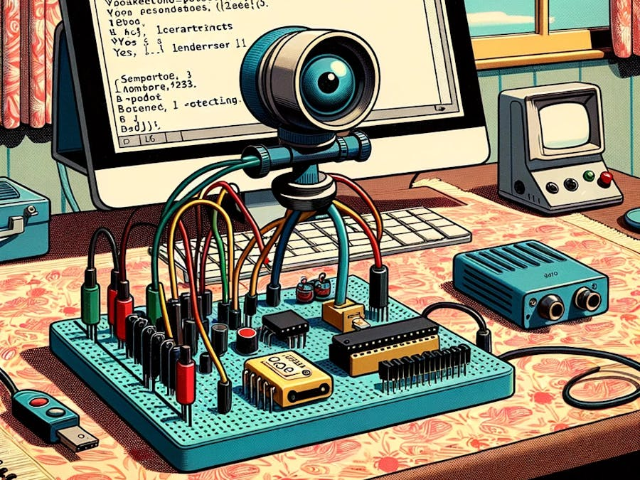

Object Detection

Introduction
In the last section regarding Computer Vision (CV) and the XIAO ESP32S3, Image Classification, we learned how to set up and classify images with this remarkable development board. Continuing our CV journey, we will explore Object Detection on microcontrollers.
Object Detection versus Image Classification
The main task with Image Classification models is to identify the most probable object category present on an image, for example, to classify between a cat or a dog, dominant “objects” in an image:

But what happens if there is no dominant category in the image?

An image classification model identifies the above image utterly wrong as an “ashcan,” possibly due to the color tonalities.
The model used in the previous images is MobileNet, which is trained with a large dataset, ImageNet, running on a Raspberry Pi.
To solve this issue, we need another type of model, where not only multiple categories (or labels) can be found but also where the objects are located on a given image.
As we can imagine, such models are much more complicated and bigger, for example, the MobileNetV2 SSD FPN-Lite 320x320, trained with the COCO dataset. This pre-trained object detection model is designed to locate up to 10 objects within an image, outputting a bounding box for each object detected. The below image is the result of such a model running on a Raspberry Pi:

Those models used for object detection (such as the MobileNet SSD or YOLO) usually have several MB in size, which is OK for use with Raspberry Pi but unsuitable for use with embedded devices, where the RAM usually has, at most, a few MB as in the case of the XIAO ESP32S3.
An Innovative Solution for Object Detection: FOMO
Edge Impulse launched in 2022, FOMO (Faster Objects, More Objects), a novel solution to perform object detection on embedded devices, such as the Nicla Vision and Portenta (Cortex M7), on Cortex M4F CPUs (Arduino Nano33 and OpenMV M4 series) as well the Espressif ESP32 devices (ESP-CAM, ESP-EYE and XIAO ESP32S3 Sense).
In this Hands-On project, we will explore Object Detection using FOMO.
To understand more about FOMO, you can go into the official FOMO announcement by Edge Impulse, where Louis Moreau and Mat Kelcey explain in detail how it works.
The Object Detection Project Goal
All Machine Learning projects need to start with a detailed goal. Let’s assume we are in an industrial or rural facility and must sort and count oranges (fruits) and particular frogs (bugs).

In other words, we should perform a multi-label classification, where each image can have three classes:
- Background (No objects)
- Fruit
- Bug
Here are some not labeled image samples that we should use to detect the objects (fruits and bugs):

We are interested in which object is in the image, its location (centroid), and how many we can find on it. The object’s size is not detected with FOMO, as with MobileNet SSD or YOLO, where the Bounding Box is one of the model outputs.
We will develop the project using the XIAO ESP32S3 for image capture and model inference. The ML project will be developed using the Edge Impulse Studio. But before starting the object detection project in the Studio, let’s create a raw dataset (not labeled) with images that contain the objects to be detected.
Data Collection
You can capture images using the XIAO, your phone, or other devices. Here, we will use the XIAO with code from the Arduino IDE ESP32 library.
Collecting Dataset with the XIAO ESP32S3
Open the Arduino IDE and select the XIAO_ESP32S3 board (and the port where it is connected). On File > Examples > ESP32 > Camera, select CameraWebServer.
On the BOARDS MANAGER panel, confirm that you have installed the latest “stable” package.
⚠️ Attention
Alpha versions (for example, 3.x-alpha) do not work correctly with the XIAO and Edge Impulse. Use the last stable version (for example, 2.0.11) instead.
You also should comment on all cameras’ models, except the XIAO model pins:
#define CAMERA_MODEL_XIAO_ESP32S3 // Has PSRAM
And on Tools, enable the PSRAM. Enter your wifi credentials and upload the code to the device:

If the code is executed correctly, you should see the address on the Serial Monitor:

Copy the address on your browser and wait for the page to be uploaded. Select the camera resolution (for example, QVGA) and select [START STREAM]. Wait for a few seconds/minutes, depending on your connection. You can save an image on your computer download area using the [Save] button.

Edge impulse suggests that the objects should be similar in size and not overlapping for better performance. This is OK in an industrial facility, where the camera should be fixed, keeping the same distance from the objects to be detected. Despite that, we will also try using mixed sizes and positions to see the result.
We do not need to create separate folders for our images because each contains multiple labels.
We suggest using around 50 images to mix the objects and vary the number of each appearing on the scene. Try to capture different angles, backgrounds, and light conditions.
The stored images use a QVGA frame size of 320x240 and RGB565 (color pixel format).
After capturing your dataset, [Stop Stream] and move your images to a folder.
Edge Impulse Studio
Setup the project
Go to Edge Impulse Studio, enter your credentials at Login (or create an account), and start a new project.

Here, you can clone the project developed for this hands-on: XIAO-ESP32S3-Sense-Object_Detection
On your Project Dashboard, go down and on Project info and select Bounding boxes (object detection) and Espressif ESP-EYE (most similar to our board) as your Target Device:

Uploading the unlabeled data
On Studio, go to the Data acquisition tab, and on the UPLOAD DATA section, upload files captured as a folder from your computer.

You can leave for the Studio to split your data automatically between Train and Test or do it manually. We will upload all of them as training.

All the not-labeled images (47) were uploaded but must be labeled appropriately before being used as a project dataset. The Studio has a tool for that purpose, which you can find in the link Labeling queue (47).
There are two ways you can use to perform AI-assisted labeling on the Edge Impulse Studio (free version):
- Using yolov5
- Tracking objects between frames
Edge Impulse launched an auto-labeling feature for Enterprise customers, easing labeling tasks in object detection projects.
Ordinary objects can quickly be identified and labeled using an existing library of pre-trained object detection models from YOLOv5 (trained with the COCO dataset). But since, in our case, the objects are not part of COCO datasets, we should select the option of tracking objects. With this option, once you draw bounding boxes and label the images in one frame, the objects will be tracked automatically from frame to frame, partially labeling the new ones (not all are correctly labeled).
You can use the EI uploader to import your data if you already have a labeled dataset containing bounding boxes.
Labeling the Dataset
Starting with the first image of your unlabeled data, use your mouse to drag a box around an object to add a label. Then click Save labels to advance to the next item.

Continue with this process until the queue is empty. At the end, all images should have the objects labeled as those samples below:

Next, review the labeled samples on the Data acquisition tab. If one of the labels is wrong, you can edit it using the three dots menu after the sample name:

You will be guided to replace the wrong label and correct the dataset.

Balancing the dataset and split Train/Test
After labeling all data, it was realized that the class fruit had many more samples than the bug. So, 11 new and additional bug images were collected (ending with 58 images). After labeling them, it is time to select some images and move them to the test dataset. You can do it using the three-dot menu after the image name. I selected six images, representing 13% of the total dataset.

The Impulse Design
In this phase, you should define how to:
- Pre-processing consists of resizing the individual images from 320 x 240 to 96 x 96 and squashing them (squared form, without cropping). Afterward, the images are converted from RGB to Grayscale.
- Design a Model, in this case, “Object Detection.”

Preprocessing all dataset
In this section, select Color depth as Grayscale, suitable for use with FOMO models and Save parameters.

The Studio moves automatically to the next section, Generate features, where all samples will be pre-processed, resulting in a dataset with individual 96x96x1 images or 9,216 features.

The feature explorer shows that all samples evidence a good separation after the feature generation.
Some samples seem to be in the wrong space, but clicking on them confirms the correct labeling.
Model Design, Training, and Test
We will use FOMO, an object detection model based on MobileNetV2 (alpha 0.35) designed to coarsely segment an image into a grid of background vs objects of interest (here, boxes and wheels).
FOMO is an innovative machine learning model for object detection, which can use up to 30 times less energy and memory than traditional models like Mobilenet SSD and YOLOv5. FOMO can operate on microcontrollers with less than 200 KB of RAM. The main reason this is possible is that while other models calculate the object’s size by drawing a square around it (bounding box), FOMO ignores the size of the image, providing only the information about where the object is located in the image through its centroid coordinates.
How FOMO works?
FOMO takes the image in grayscale and divides it into blocks of pixels using a factor of 8. For the input of 96x96, the grid would be 12x12 (96/8=12). Next, FOMO will run a classifier through each pixel block to calculate the probability that there is a box or a wheel in each of them and, subsequently, determine the regions that have the highest probability of containing the object (If a pixel block has no objects, it will be classified as background). From the overlap of the final region, the FOMO provides the coordinates (related to the image dimensions) of the centroid of this region.

For training, we should select a pre-trained model. Let’s use the FOMO (Faster Objects, More Objects) MobileNetV2 0.35. This model uses around 250KB of RAM and 80KB of ROM (Flash), which suits well with our board.

Regarding the training hyper-parameters, the model will be trained with:
- Epochs: 60
- Batch size: 32
- Learning Rate: 0.001.
For validation during training, 20% of the dataset (validation_dataset) will be spared. For the remaining 80% (train_dataset), we will apply Data Augmentation, which will randomly flip, change the size and brightness of the image, and crop them, artificially increasing the number of samples on the dataset for training.
As a result, the model ends with an overall F1 score of 85%, similar to the result when using the test data (83%).
Note that FOMO automatically added a 3rd label background to the two previously defined (box and wheel).

In object detection tasks, accuracy is generally not the primary evaluation metric. Object detection involves classifying objects and providing bounding boxes around them, making it a more complex problem than simple classification. The issue is that we do not have the bounding box, only the centroids. In short, using accuracy as a metric could be misleading and may not provide a complete understanding of how well the model is performing. Because of that, we will use the F1 score.
Test model with “Live Classification”
Once our model is trained, we can test it using the Live Classification tool. On the correspondent section, click on Connect a development board icon (a small MCU) and scan the QR code with your phone.

Once connected, you can use the smartphone to capture actual images to be tested by the trained model on Edge Impulse Studio.

One thing to be noted is that the model can produce false positives and negatives. This can be minimized by defining a proper Confidence Threshold (use the Three dots menu for the setup). Try with 0.8 or more.
Deploying the Model (Arduino IDE)
Select the Arduino Library and Quantized (int8) model, enable the EON Compiler on the Deploy Tab, and press [Build].

Open your Arduino IDE, and under Sketch, go to Include Library and add.ZIP Library. Select the file you download from Edge Impulse Studio, and that’s it!

Under the Examples tab on Arduino IDE, you should find a sketch code (esp32 > esp32_camera) under your project name.

You should change lines 32 to 75, which define the camera model and pins, using the data related to our model. Copy and paste the below lines, replacing the lines 32-75:
#define PWDN_GPIO_NUM -1
#define RESET_GPIO_NUM -1
#define XCLK_GPIO_NUM 10
#define SIOD_GPIO_NUM 40
#define SIOC_GPIO_NUM 39
#define Y9_GPIO_NUM 48
#define Y8_GPIO_NUM 11
#define Y7_GPIO_NUM 12
#define Y6_GPIO_NUM 14
#define Y5_GPIO_NUM 16
#define Y4_GPIO_NUM 18
#define Y3_GPIO_NUM 17
#define Y2_GPIO_NUM 15
#define VSYNC_GPIO_NUM 38
#define HREF_GPIO_NUM 47
#define PCLK_GPIO_NUM 13Here you can see the resulting code:

Upload the code to your XIAO ESP32S3 Sense, and you should be OK to start detecting fruits and bugs. You can check the result on Serial Monitor.
Background

Fruits

Bugs

Note that the model latency is 143ms, and the frame rate per second is around 7 fps (similar to what we got with the Image Classification project). This happens because FOMO is cleverly built over a CNN model, not with an object detection model like the SSD MobileNet. For example, when running a MobileNetV2 SSD FPN-Lite 320x320 model on a Raspberry Pi 4, the latency is around five times higher (around 1.5 fps).
Deploying the Model (SenseCraft-Web-Toolkit)
As discussed in the Image Classification chapter, verifying inference with Image models on Arduino IDE is very challenging because we can not see what the camera focuses on. Again, let’s use the SenseCraft-Web Toolkit.
Follow the following steps to start the SenseCraft-Web-Toolkit:
- Open the SenseCraft-Web-Toolkit website.
- Connect the XIAO to your computer:
- Having the XIAO connected, select it as below:

- Select the device/Port and press
[Connect]:

You can try several Computer Vision models previously uploaded by Seeed Studio. Try them and have fun!
In our case, we will use the blue button at the bottom of the page: [Upload Custom AI Model].
But first, we must download from Edge Impulse Studio our quantized .tflite model.
- Go to your project at Edge Impulse Studio, or clone this one:
- On
Dashboard, download the model (“block output”):Object Detection model - TensorFlow Lite (int8 quantized)
- On SenseCraft-Web-Toolkit, use the blue button at the bottom of the page:
[Upload Custom AI Model]. A window will pop up. Enter the Model file that you downloaded to your computer from Edge Impulse Studio, choose a Model Name, and enter with labels (ID: Object):
Note that you should use the labels trained on EI Studio and enter them in alphabetic order (in our case, background, bug, fruit).
After a few seconds (or minutes), the model will be uploaded to your device, and the camera image will appear in real-time on the Preview Sector:
The detected objects will be marked (the centroid). You can select the Confidence of your inference cursor Confidence. and IoU, which is used to assess the accuracy of predicted bounding boxes compared to truth bounding boxes
Clicking on the top button (Device Log), you can open a Serial Monitor to follow the inference, as we did with the Arduino IDE.
On Device Log, you will get information as:
- Preprocess time (image capture and Crop): 3 ms;
- Inference time (model latency): 115 ms,
- Postprocess time (display of the image and marking objects): 1 ms.
- Output tensor (boxes), for example, one of the boxes: [[30,150, 20, 20,97, 2]]; where 30,150, 20, 20 are the coordinates of the box (around the centroid); 97 is the inference result, and 2 is the class (in this case 2: fruit)
Note that in the above example, we got 5 boxes because none of the fruits got 3 centroids. One solution will be post-processing, where we can aggregate close centroids in one.
Here are other screenshots:

Conclusion
FOMO is a significant leap in the image processing space, as Louis Moreau and Mat Kelcey put it during its launch in 2022:
FOMO is a ground-breaking algorithm that brings real-time object detection, tracking, and counting to microcontrollers for the first time.
Multiple possibilities exist for exploring object detection (and, more precisely, counting them) on embedded devices.